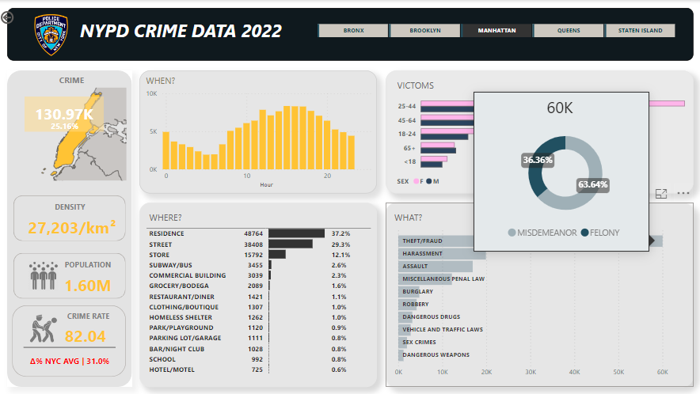

This interactive dashboard for Citadele 2023 provides a comprehensive overview of key financial metrics, customer demographics, and significant events, allowing stakeholders to easily monitor the bank's performance and strategic initiatives.
Whether you're a seasoned sneakerhead looking to assess the value of your prized collection, an investor seeking potential opportunities in the sneaker market, or simply curious about the ever-evolving sneaker landscape, StockX Sneaker Analysis offers valuable insights and a deep dive into the world of sneakers.

This time we worked with dirty and big dataset we utilized Excel and SQL to create some order first and Power BI I designed this interactive dashboard to provide a comprehensive and accessible overview of crime data in NYC. To help stakeholders, such as law enforcement, policymakers, and community members, to understand crime patterns, identify high-risk times and locations, and allocate resources effectively to improve public safety.
In the Data Analytics Accelerator program, I got my hands on some delivery service sales data. Adding my newfound knowledge in the Marketing I decided to dabble a bit to get answers about Customer Persona profiles. Using Excel Pivot Tables, filtering and aggregating transformed, processed data by to ensuring data completeness then analyzed dataset. Identified top-selling products, and recommended strategies for targeting ideal customer personas.
Implemented SQL to uncover patterns and trends in healthcare data. Explored healthcare outcomes and utilization, identifying potential disparities in care based on gender and race and highlighting the need for ongoing data collection and analysis to ensure high-quality care for all patients. This analysis can provide valuable insights into the challenges facing the healthcare system and the opportunities for improving patient outcomes.
Data Cleaning, Exploration, Analysis in Excel. I have received an email from my manager with a few clues, time to make sense of their data and end this mystery. Created a report analyzing Q2 2021 volume by region, providing valuable insights to inform business decisions.
Data cleaning in SQL server. Data exploration and visualizations in Python. In this project, we look at scraped data from the #1 classified ads website in Latvia for properties in Riga, City center.